ManoloMadrid
Tapas et riz espagnols faits maison, servis au comptoir face à la cuisine ouverte, dans le vieux Namur.
Du mardi au samedi, 18 h – 22 h
4,6 sur 5 · 227 avis Google
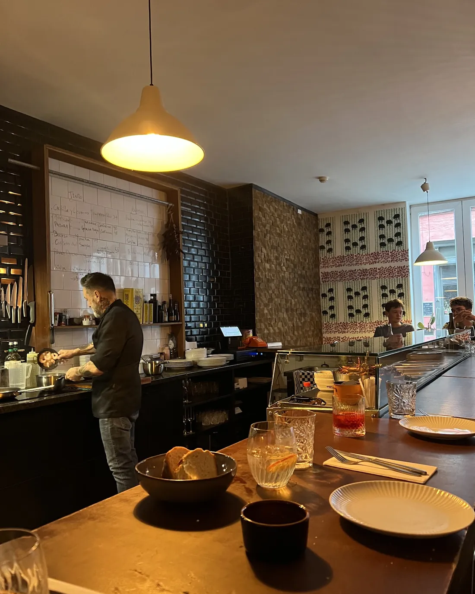
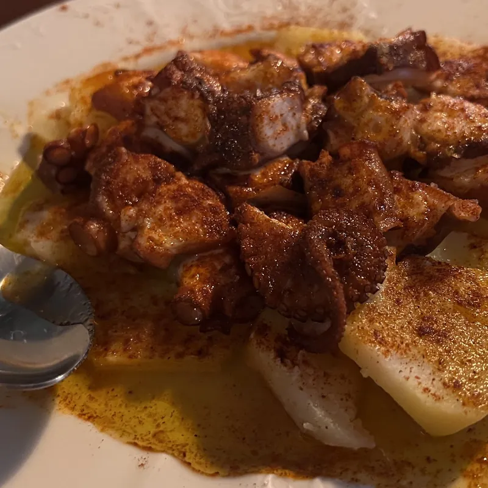
D'après le papier peint de la salle
Tapas, riz et vins d'Espagne
Ce qui passe sur le comptoir, en photos. La carte complète et les prix se lisent sur place, et le chef vous guide.
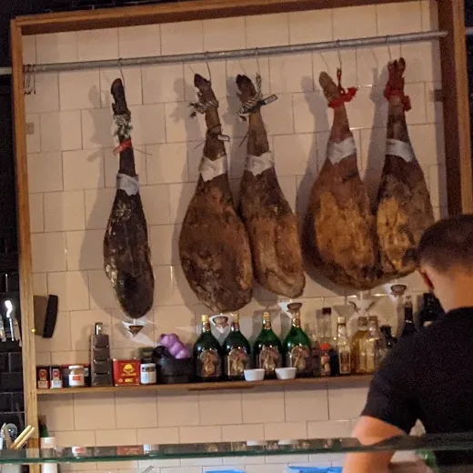
Para picar tapas
IbéricoLe porc ibérique : les jambons pendent au mur, derrière le comptoir.
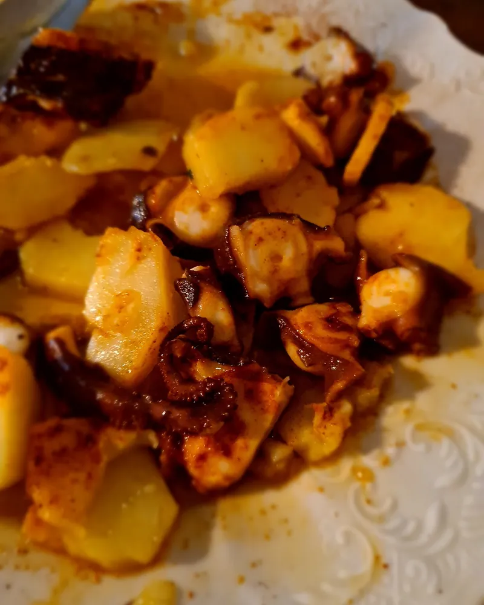
PulpoPoulpe, pommes de terre et paprika.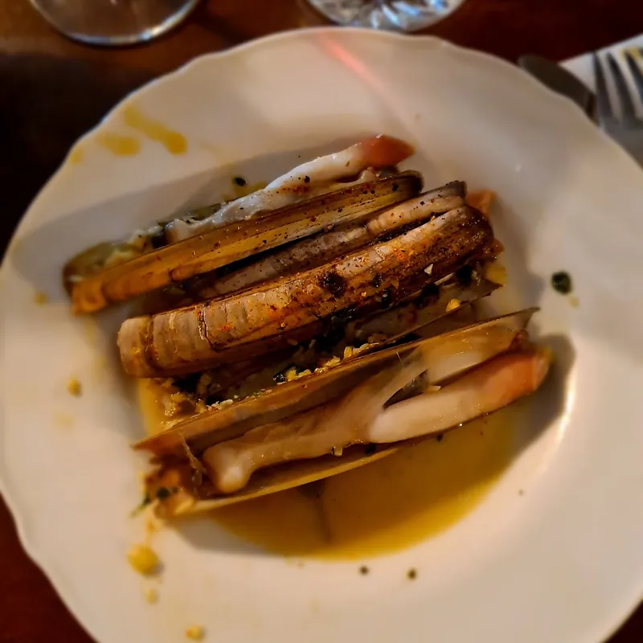
NavajasCouteaux de mer à la plancha.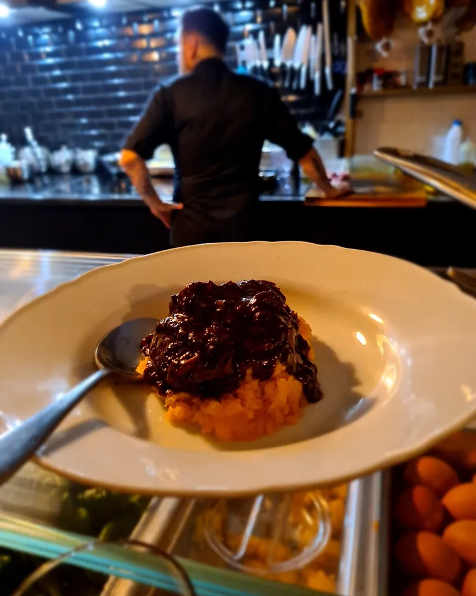
Y másViande en sauce sur purée, et d’autres assiettes à découvrir sur place.« […] Les tapas sont succulents, tout est fait maison avec des super bon produits. […] »Emeline M.
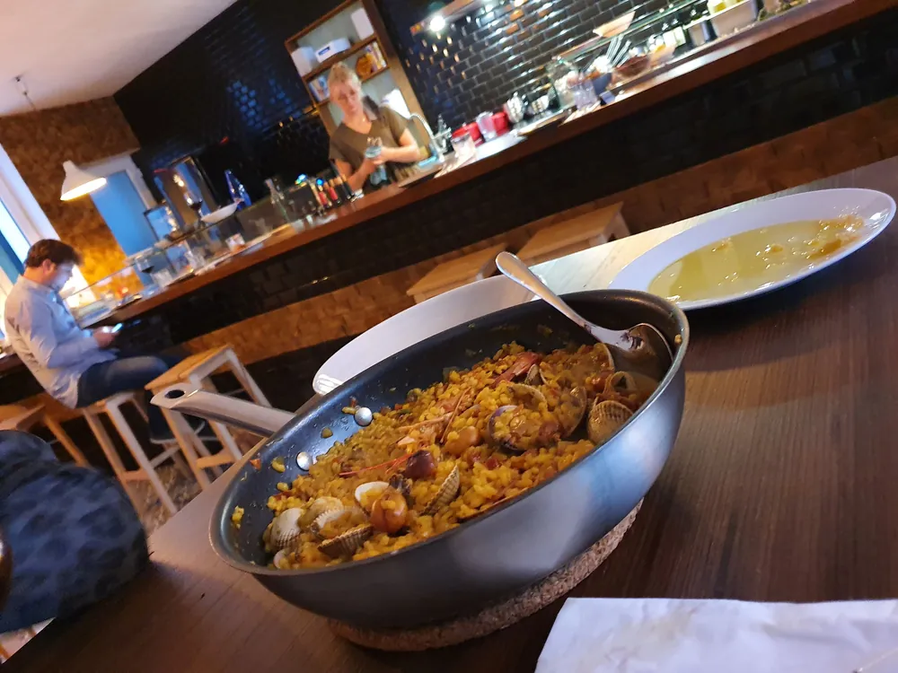
Arroces les riz
Arroz con almejasRiz aux palourdes, servi dans sa poêle.
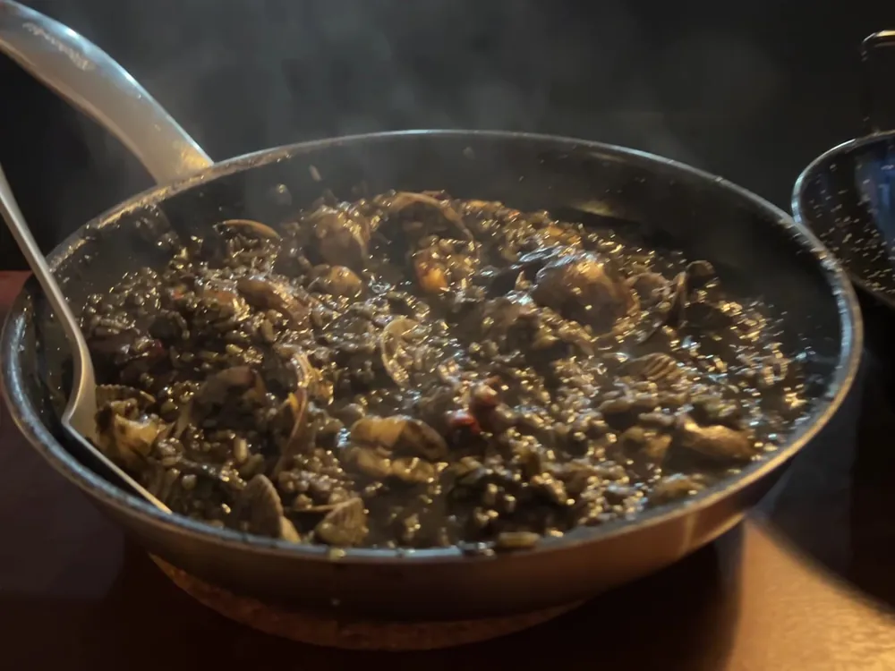
Arroz negroRiz noir, cuit en poêle.« […] Ne pas confondre paella et Riz ! Ce n’est absolument pas la même chose ;-) […] »Béné L.
« […] il a fallu écouter le chef car les tapas et riz sont très copieux. […] »Béné L.
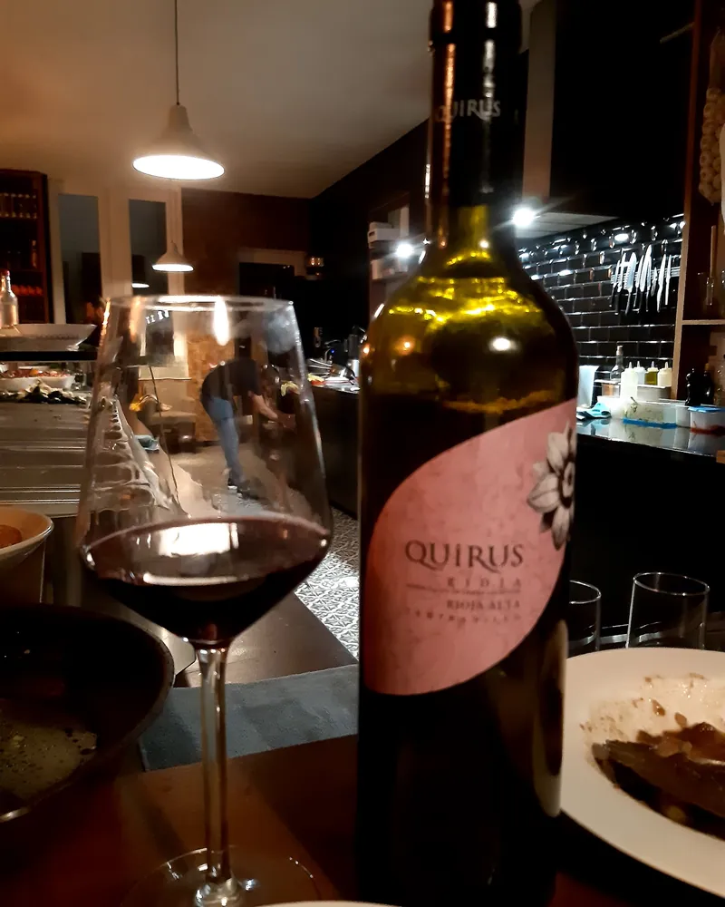
Para beber à boire
Vinos de EspañaRioja et vins espagnols, conseillés au comptoir.
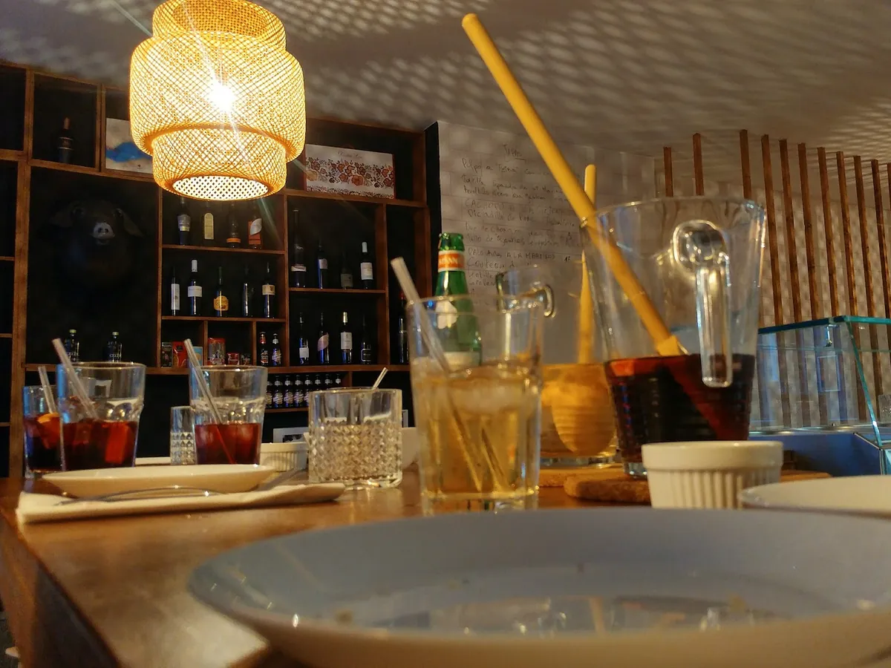
En jarraCarafe et verres, servis au bar.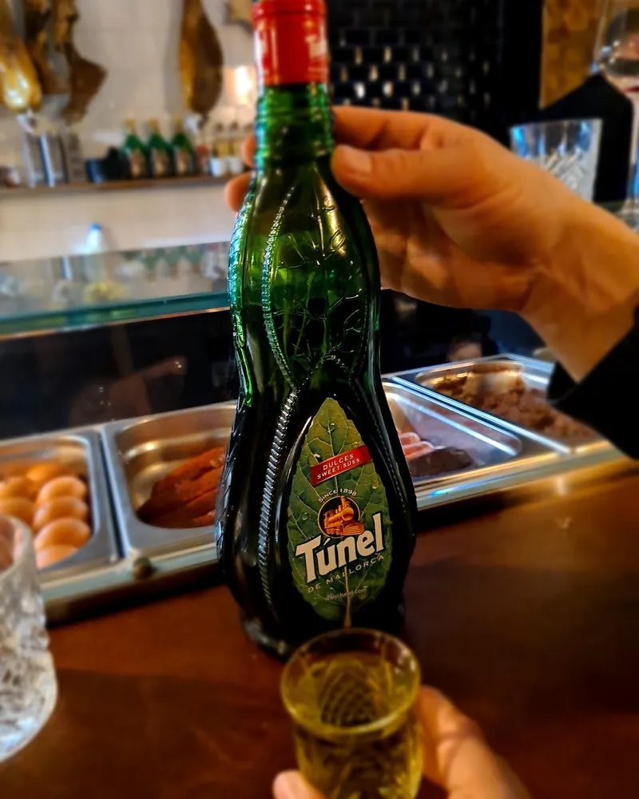
TúnelLiqueur d’herbes de Majorque, en digestif.« […] Beau conseil en vins espagnols […] »Fabrice L.
Une question sur la carte ? 081 26 25 22
Réserver une place
Une vingtaine de couverts seulement : choisissez le soir, l’heure et le nombre.
Ce qu’en disent les clients
Un soir, rue des Brasseurs
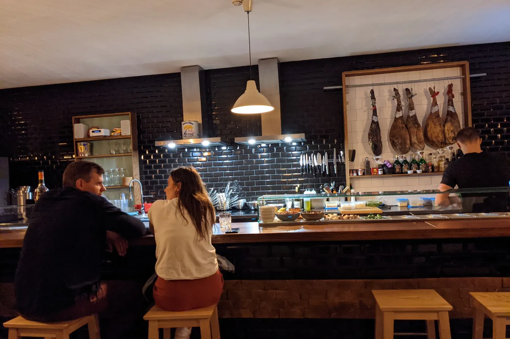
Horaires et accès
| lundi | fermé |
|---|---|
| mardi | 18 h – 22 h |
| mercredi | 18 h – 22 h |
| jeudi | 18 h – 22 h |
| vendredi | 18 h – 22 h |
| samedi | 18 h – 22 h |
| dimanche | fermé |
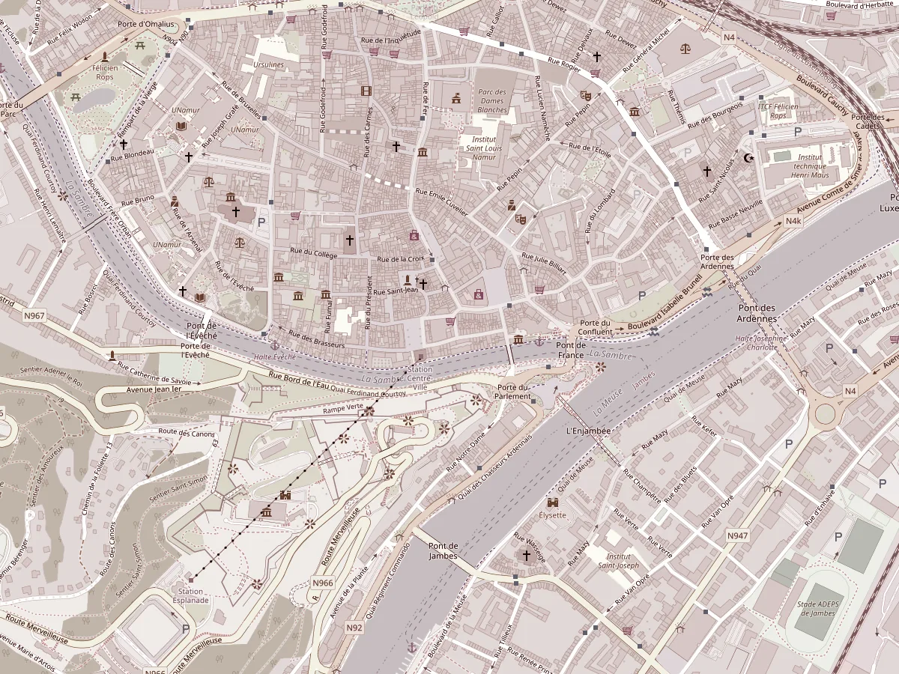
Itinéraire © OpenStreetMap